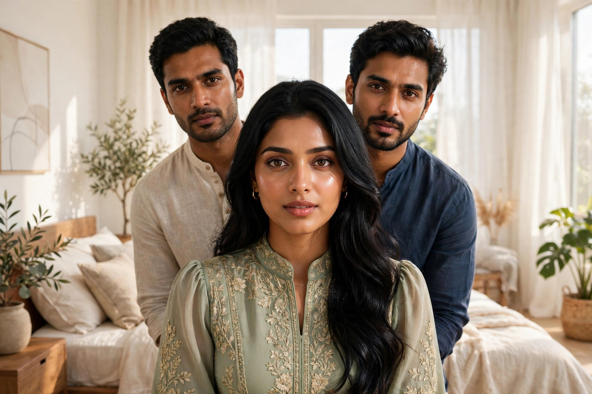

ھیلو دوستو میرا نام زبیر ھے آج میں آپ دوستوں کو اپنی زندگی کی وہ سچی آپ بیتی سنانے جا رہا ھوں جس کا ایک ایک لفظ سچا ھے تو بنا ٹائم ضائع کیئے میں اپنی آپ بیتی شروع کرتا ھوں میں ایک آفس میں جاب کرتا وہا پرکاش سے میری اچھی دوستی ھو گئی مگر پرکاش سب سے پہلے آفس جاتا تھا بہت دنوں سے چاہتا تھا کہ میں پرکاش سے پوچھوں کہ تم اتنا جلدی آفس کیسے آجاتے ھو اور ایک دن میں نے پرکاش سے پوچھا، "تم سب سے پہلے آفس کیسے آجاتے ہو؟" پرکاش نے مسکرا کر جواب دیا، "یار اس کی وجہ مایا ہے۔" میں نے کہا، "مایا کون؟" پرکاش نے کہا، "میری بیوی کا نام مایا ہے۔" میں نے مسکرا کر کہا، "اچھا، مایا تمہاری بیوی ہے۔" بولا، "ہاں، مایا میری بیوی کا نام ہے۔ تم نے پوچھا نہ کہ میں سب سے پہلے آفس کیسے آجاتا ہوں؟" میں نے کہا، "ہاں پرکاش، میری تو صبح آنکھ ہی نہیں کھلتی۔" پرکاش نے کہا، "یار، آنکھ تو میری بھی نہیں کھلتی، مگر مایا ہے، وہ ایسا کام کرتی ہے کہ مجھے جگا دیتی ہے اور مجھے غصہ بھی نہیں آتا۔" میں نے کہا، "ایسا کیا کرتی ہے کہ تمہیں غصہ ہی نہیں آتا؟ مجھے صبح جو اٹھائے، میں بہت غصہ کرتا ہوں۔" پرکاش نے کہا، "ابھی تمہاری شادی نہیں ہوئی، اس لیے تمہیں غصہ آجاتا ہے۔" میں نے کہا، "مگر تم اتنا جلدی آتے ہو، کوئی بھی آفس میں نہیں ہوتا، صرف تم ہوتے ہو۔" پرکاش نے کہا، "زبیر، تم میرے دوست ہو، اس لیے صرف تم کو بتاتا ہوں، تم اور کسی کو نہیں بتانا۔" میں نے کہا، "ارے پرکاش، تم میرے سب سے اچھے دوست ہو، میں تمہاری بات بھلا کسی اور کو کیوں بتاؤں گا؟" تو پرکاش نے کہا، "یار، تم کو پتا ہے صبح کے وقت مرد کا وجود جاگ رہا ہوتا ہے اور مردانہ جذبات عروج پر ہوتے ہیں۔" میں نے مسکرا کر کہا، "ہاں پرکاش، تم نے ٹھیک کہا، سچ ہے، یہ تو ایک فطری بات ہے اور سب کے ساتھ ہوتا ہے۔" پرکاش نے کہا، "زبیر، میں کب کہتا ہوں کہ کسی کے ساتھ نہیں ہوتا، ہاں سب کے ساتھ ہوتا ہے۔ اب سنو، جب میں گہری نیند میں ہوتا ہوں اور میرے اندر جذبات کا ابھار ہوتا ہے، مایا میرے قریب آتی ہے اور محبت کی سحر انگیزی سے مجھے جگانا شروع کرتی ہے۔ وہ میرے وجود کو اپنی آغوش اور لمس سے اس وقت تک تسکین دیتی ہے جب تک میرے جذبات کا طوفان تھم نہیں جاتا۔ کبھی کبھی میں جاگتے ہی مایا کو اپنے اوپر کر لیتا ہوں اور ہم دونوں محبت کی گہرائیوں میں ڈوب جاتے ہیں۔ اس وصال سے فارغ ہونے کے بعد پھر میں تروتازہ ہو کر آفس آجاتا ہوں۔" پرکاش کی یہ بات سن کر میرے بدن میں بھی ایک تپش سی دوڑ گئی۔ پرکاش نے کہا، "مایا بہت جذباتی اور گرمجوش ہے۔" پرکاش نے اپنا والٹ نکالا اور والٹ سے مجھے اپنی بیوی مایا کی تصویر دکھائی۔ مایا دیکھنے میں بہت حسین تھی۔ اس کے ابھرے ہوئے اعضاء اور دلکش سراپا اس کے فگر کو چار چاند لگا رہے تھے۔ اس کے بعد پرکاش مایا کے بارے میں سب بتاتا، اپنی نجی زندگی اور قربت کی ساری کہانیاں بھی شیئر کرتا۔ میں جب گھر آتا تو پرکاش کی باتوں سے میرا پورا وجود سسکنے لگتا۔ مایا میرے روم روم میں سمانے لگی۔ میں صرف مایا کی تصویر دیکھتا اور پرکاش کی باتیں سوچتا رہتا تھا۔ پھر جس گھر میں میں کرائے پر رہتا تھا، اس کے مالک نے کہا کہ میں نے یہ مکان بیچ دیا ہے، تم اپنے رہنے کا بندوبست کرو۔ اب میں کیا کرتا، اور اس دن ہڑتال کی وجہ سے آفس بھی بند تھا۔ میں نے پرکاش کو کال کر کے سب بتایا اور کہا، "یار، مجھے کرائے پر کوئی کمرہ لے کر دو۔" پرکاش نے کہا، "زبیر، میں آرہا ہوں ایک گھنٹے بعد۔" پرکاش آگیا اور بولا، "یار، کمرہ تو ابھی نہیں مل رہا، مگر تم میرے گھر میں رہ سکتے ہو۔" میں نے کہا، "پرکاش یار، بھابھی کیا سوچیں گی؟" مگر پرکاش نے ایک نہ سنی، آٹو میں سامان لوڈ کیا اور مجھے اپنے گھر لے آیا۔ آج پہلی بار میں نے مایا کو سامنے لائیو دیکھا تو بس دیکھنے سے دل ہی نہیں بھر رہا تھا۔ عجب بات یہ تھی کہ مایا بھی بار بار میری آنکھوں میں دیکھتی تھی، لیکن مجھے پرکاش کا لحاظ تھا، اس لیے میں نظریں جھکا لیتا تھا۔ پھر آفس کھل گئے، پرکاش تو پہلے ہی آفس چلا جاتا تھا اور میں اپنے وقت پر جاتا تھا۔ اب پرکاش کے جانے کے بعد میں اور مایا گھر میں اکیلے ہوتے۔ مایا میرے لیے ناشتہ بناتی، مجھے پیار سے "زبیر" کہہ کر پکارتی اور اٹھاتی تھی۔ ایک صبح میں ناشتہ کر رہا تھا اور مایا بھی ساتھ میں ناشتہ کر رہی تھی۔ مایا نے پوچھا، "زبیر، تمہاری کوئی گرل فرینڈ ہے؟" میں نے مسکرا کر کہا، "بھابھی جی، گرل فرینڈ نہیں ہے، آفس سے گھر اور گھر سے آفس، بس وقت ہی نہیں ملتا۔" مایا نے کہا، "अच्छा، تو کہیں رشتہ ہوا ہے؟" میں نے کہا، "نہیں بھابھی، ابھی تک تو نہیں ہوا۔" تو مایا نے ہنس کر کہا، "دل تو کرتا ہوگا گرل فرینڈ بنانے کو؟" میں نے کہا، "ہاں، مگر کوئی ملی ہی نہیں ہ۔" مایا نے کہا، "تم ایسا کرو، مجھے اپنی گرل فرینڈ بنا لو۔" میں یہ سن کر چونک گیا اور کوئی جواب نہیں دیا۔ مایا نے پھر کہا، "سوچ کیا رہے ہو؟ تمہیں بہت خوش رکھوں گی۔" میں نے کہا، "بھابھی، آپ پرکاش کی بیوی ہو۔" تو مایا مسکرا کر بولی، "کیوں، تمہارا دل نہیں کرتا کیا؟ کیا میں خوبصورت نہیں ہوں؟" میں نے کہا، "بھابھی، ایسی بات نہیں ہے، آپ بہت خوبصورت ہو۔" مایا نے کہا، "پھر کیا مسئلہ ہے؟" میں نے کہا، "پرکاش..." مایا نے کہا، "اسے پتا نہیں چلے گا، صرف تم ہاں تو کرو، پرکاش کو میں سنبھال لوں گی۔" مایا اٹھ کر میرے پاس آئی، میرے کندھوں پر ہاتھ رکھ کر جھکی اور اپنا چہرہ میرے سامنے کر کے بولی، "زبیر، تمہیں بہت پیار دوں گی۔" میں نے کہا، "بھابھی، آپ پرکاش سے خوش نہیں ہو کیا؟" مایا نے میرے لبوں کو چوما اور بولی، "خوش ہوں، مگر تم مجھے پسند ہو، تمہیں بہت پیار دوں گی۔" مایا نے اپنے لب میرے لبوں پر رکھ کر چوستے ہوئے اپنا ہاتھ میرے وجود کی تپش پر رکھ دیا۔ میں نے مایا کو بانہوں میں بھر کر اپنی گود میں بٹھا لیا اور دیوانہ وار چومنے لگا۔ مایا نے کہا، "چلو کمرے میں، تمہیں خوش کرتی ہوں۔" اب مجھ سے رہا نہ گیا، میں نے مایا کو اپنی بانہوں میں اٹھا لیا اور کمرے میں لے آیا۔ مایا مجھے مستی میں چومنے لگی، میری شرٹ اتار دی۔ میں مایا کے ابھرے ہوئے حسن کو دبانے لگا اور اسے چومنے لگا۔ مایا نے میری پینٹ کا بیلٹ کھول کر جب میرا مردانہ وجود دیکھا تو بولی، "زبیر، تم تو بہت کسرتی اور تگڑے ہو۔" میں نے مایا کا لباس اتار دیا اور مایا میرے وجود کو اپنی زلفوں اور لبوں کے لمس سے نہلانے لگی۔ میں جس کے خواب دیکھتا تھا، آج حقیقت میں وہ مزے کر رہا تھا۔ پھر میں نے مایا کے انگ انگ کو چوما اور پھر دو گھنٹے تک مسلسل ہم دونوں ایک دوسرے کی آغوش میں پگھلتے رہے۔ پرکاش کی کال آئی تو مایا نے مجھ سے کہا، "بولو طبیعت خراب ہے۔" میں نے کہہ دیا، اور ہم نے کچھ دیر بریک کے بعد پھر ایک دوسرے کا وصال پایا اور سارا دن بس محبت کی وادیوں میں کھوئے رہے۔ اس کے بعد جب بھی پرکاش آفس چلا جاتا، تو مایا اسی رومانوی انداز میں مجھے اٹھاتی اور ہم دونوں قربت کے لمحوں کا لطف اٹھاتے، پھر میں آفس چلا جاتا۔ اسی طرح پندرہ دن ہو گئے۔ ایک رات مایا میرے کمرے میں آگئی، میں نے گھبرا کر کہا، "پرکاش؟" تو وہ بولی، "وہ سو رہا ہے"، اور ہم پھر سے ایک دوسرے کی باہوں میں سمٹ گئے۔ ایک مہینے بعد مایا کو مخصوص ایام (Periods) آگئے، تو مایا نے کہا، "آج تم میری پشت سے لطف اٹھاؤ۔" میں نے تعجب سے پوچھا، "تم پشت سے بھی وصال کرتی ہو؟" مایا نے کہا، "ہاں زبیر، یہ پرکاش کا پسندیدہ طریقہ ہے۔" مایا کے اس پرکشش اور گداز حسن میں اپنا وجود ڈال کر میں لذت حاصل کرنے لگا، اور مایا میرے مردانہ پن کی بہت تعریف کرتی تھی۔ جب مایا کے مخصوص ایام ختم ہوئے تو بولی، "رات کو آؤں گی"، پھر وہ رات کو آئی۔ مایا میرے اوپر بیٹھ کر وصال کے مزے لے رہی تھی کہ اتنے میں پرکاش کمرے میں آگیا۔ مایا میرے اوپر سے ہٹی نہیں۔ میں پرکاش کو دیکھ کر ڈر گیا کہ اب ہنگامہ ہونے والا ہے، مگر پرکاش نے میری طرف غصے سے دھیان ہی نہیں دیا اور مایا کو چومنے لگا۔ کچھ دیر بعد پرکاش نے مایا سے کہا، "جھک جاؤ۔" مایا کے آگے کا حصہ میری آغوش میں تھا اور وہ میرے اوپر لیٹ گئی۔ پرکاش نے پیچھے سے مایا کے وجود میں شمولیت اختیار کر لی اور ہم دونوں مل کر مایا کو تسکین دینے لگے۔ مایا نے مجھے کہا، "تم نیچے سے اپنا کام جاری رکھو" اور اپنا منہ میرے منہ پر رکھ دیا۔ مجھ میں نئی جان آئی اور میں نیچے سے متحرک ہو گیا۔ پرکاش نے ہنستے ہوئے کہا، "زبیر، میری بیوی کے ساتھ وقت گزارنے میں مزہ آتا ہے؟" میں نے کہا، "ہاں پرکاش، مایا بہت لاجواب اور مست ہے۔" جب ہم سب فارغ ہو گئے تو پرکاش نے سنجیدگی سے کہا، "زبیر یار، میں مایا کو ماں بننے کی خوشی نہیں دے سکتا، اس لیے مجھے تمہاری مردانہ طاقت کی ضرورت پڑی ہے۔" میں نے حیرت اور سکون کا سانس لیتے ہوئے کہا، "پرکاش، تم فکر نہ کرو، اب سب ٹھیک ہو جائے گا۔" پرکاش نے کہا، "زبیر، تمہیں مایا پسند تو ہے نہ؟" میں نے کہا، "پرکاش، مایا مجھے بہت پسند آئی ہے یار۔" مایا نے پیار سے کہا، "اب زبیر، تم ہمیشہ ہمارے ساتھ رہنا۔" میں نے کہا، "ہاں، میں تمہیں کبھی چھوڑ کر نہیں جاؤں گا۔" اس کے بعد ہم تینوں ایک ہی کمرے میں سونے لگے۔ مایا بیچ میں سوتی اور ہم سب مل کر زندگی کا لطف اٹھاتے۔ پرکاش کو صبح وہ پیار سے الوداع کر کے آفس بھیجتی، پھر مجھے اسی رومانوی لمس سے جگاتی اور ہم قربت پاتے، پھر میں جاتا۔ تیسرے مہینے مایا امید سے (Pregnant) ہو گئی۔